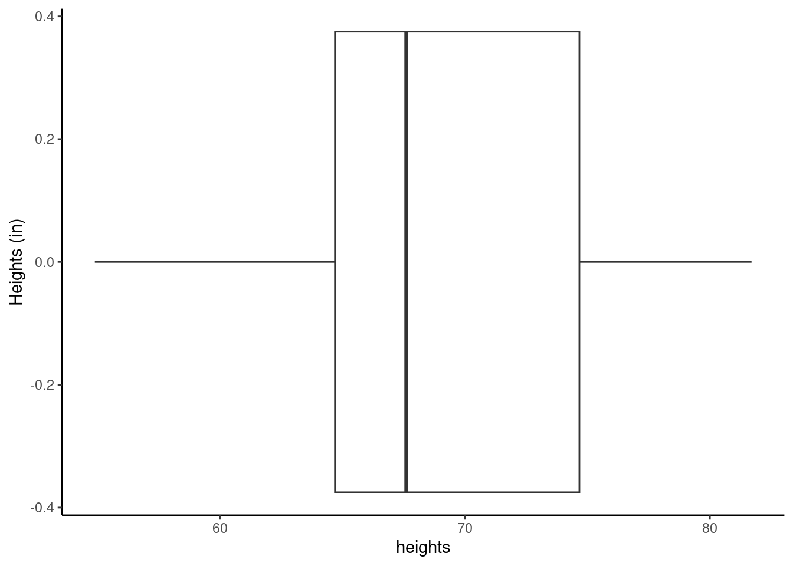
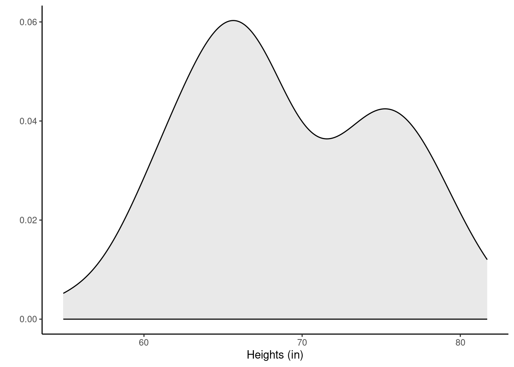
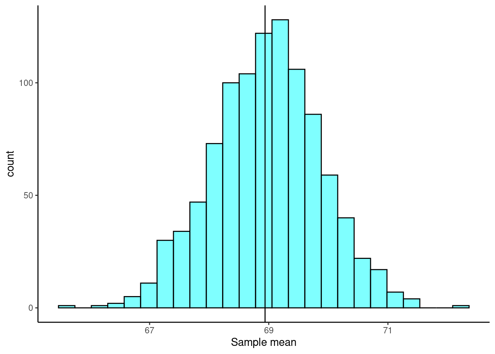
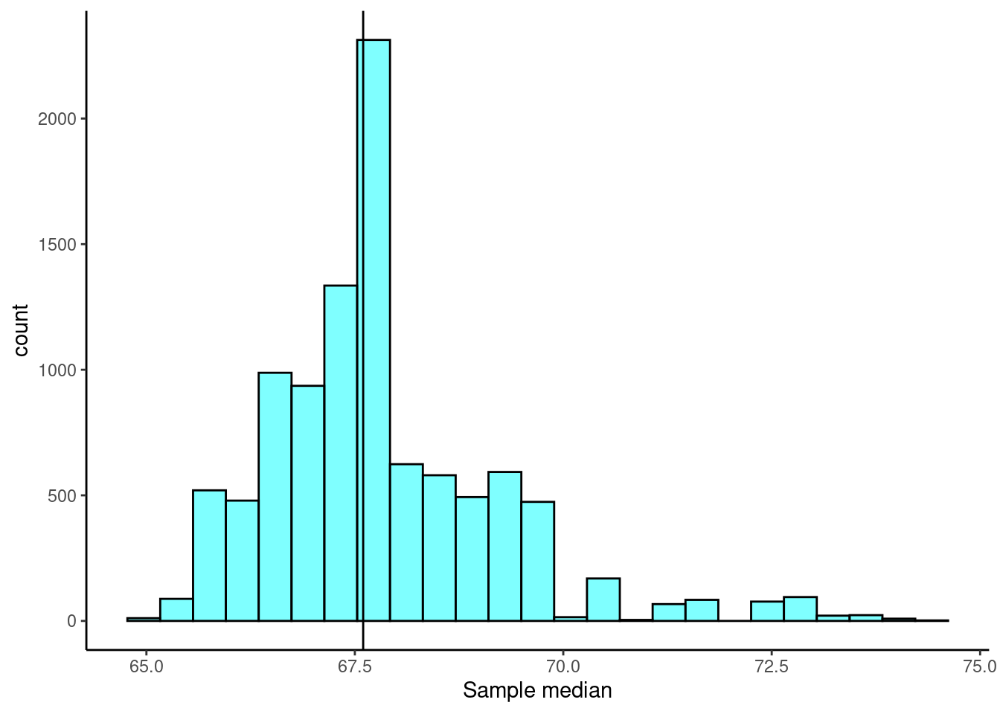

heights <- c(62.0, 73.8, 59.8, 66.9, 75.6, 63.3, 64.0, 63.1, 65.0, 67.2,
73.0, 62.3, 60.8, 65.7, 60.8, 65.8, 63.3, 54.9, 67.8, 65.1,
74.8, 75.0, 77.8, 73.7, 74.3, 68.4, 77.5, 77.9, 66.5, 65.5,
71.7, 75.9, 81.7, 76.5, 77.8, 75.0, 64.6, 59.4, 60.7, 69.2,
78.2, 65.7, 69.6, 80.0, 67.6, 73.0, 65.3, 67.6, 66.2, 69.6)20 Bootstrap
20.1 Objectives
Differentiate between various statistical terminologies such as sampling distribution, bootstrapping, bootstrap distribution, resample, sampling with replacement, and standard error, and construct examples to demonstrate their proper use in context.
Apply the bootstrap technique to estimate the standard error of a sample statistic.
Utilize bootstrap methods to construct and interpret confidence intervals for unknown parameters from random samples.
Analyze and discuss the advantages, disadvantages, and underlying assumptions of bootstrapping for constructing confidence intervals.
20.2 Computational vs. mathematical inference methods
We are going to be using data from a sample of the population to make decisions about the population. There are many approaches and techniques for this. In this book, we will be introducing and exploring different approaches; we are establishing foundations. As you can imagine, these ideas are varied, subtle, and at times difficult. We will just be exposing you to the foundational ideas. We want to make sure you understand that to become an accomplished practitioner, you must master the fundamentals and continue to learn the advanced ideas.
Historically, there have been two approaches to statistical decision making, hypothesis testing and confidence intervals. At their mathematical foundation, they are equivalent, but, sometimes in practice, they offer different perspectives on the problem. We will learn about both of these approaches.
The engines that drive the numeric results of a decision making model are either mathematical or computational. In reality, computational methods have mathematics behind them, and mathematical methods often require computer computations. The real distinction between them is the assumptions we are making about our population. Mathematical solutions typically have stricter assumptions, thus leading to a tractable mathematical solution to the sampling distribution of the test statistic, while computational models relax assumptions but may require extensive computational power. Like all problems, there is a trade off to consider when trying to choose which approach is better. There is no one universal best method. Some methods perform better in certain contexts. It is important to understand that computational methods such as the bootstrap are NOT all you need to know.
20.3 Bootstrapping
Bootstrapping1 is a powerful statistical method that allows us to estimate the sampling distribution of a statistic by resampling with replacement from the original data. This technique is particularly useful when the theoretical distribution of a statistic is complex or unknown.
The theory required to quantify the uncertainty of a statistic such as the sample median is complex. In an ideal world, we would sample data from the population and compute the median with this sample. Then we could sample again from the population and recompute the media with this new sample. Then we could do it again. And again. And so on until we get enough median estimates that we have a good sense of the precision of our original estimate. This is an ideal world where sampling data is free or extremely inexpensive. That is rarely the case, which poses a challenge to this “resample from the population” approach.
However, we can sample from the sample we already have. Bootstrapping allows us to simulate the sampling distribution by resampling from the original sample. Suppose \(x_1, x_2, ..., x_n\) is an i.i.d. random sample from the population. First, we define the empirical distribution function of \(X\) by assigning an equal probability to each \(x_i\). Then, we sample from this empirical probability mass function. Thus, we are treating our sample as a discrete uniform random variable, and sampling from our original sample with replacement.
The general procedure for bootstrapping is to sample with replacement from the original sample, calculate and record the sample statistic for that bootstrapped sample, then repeat the process many times. The collection of sample statistics comprises a bootstrap distribution of the sample statistic. Generally, this procedure works quite well, provided the original sample is representative of the population. Otherwise, any bias or misrepresentation is simply amplified throughout the bootstrap process. Further, for very small sample sizes, bootstrap distributions become “choppy” and hard to interpret. Thus, in small sample cases, we must use permutation or mathematical methods to determine the sampling distribution.
Once we have completed the procedure, the bootstrap distribution can be used to build a confidence interval for the population parameter or estimate the standard error.
20.4 Bootstrap example
To help us understand the bootstrap, let’s use an example of a single mean. We would like to estimate the mean height of students at a local college. We collect a sample of size 50 (stored in the vector heights below).
Exercise Using the bootstrap method, generate an approximation of the sampling distribution for the true mean height, \(\mu\). Use it to estimate the variability of the mean and find 95% confidence intervals for \(\mu\).
20.4.1 Summary statistics
Let’s look at the data. Figure 26.1 and Figure 20.2 show a boxplot and density plot of the heights, respectively.


The distribution of heights looks bimodal. There are likely both male and female students in this sample, and thus we have two different population distributions of heights. We can also use favstats() to examine some of our favorite statistics.
favstats(~heights) min Q1 median Q3 max mean sd n missing
54.9 64.7 67.6 74.675 81.7 68.938 6.345588 50 0If we want to use the tidyverse, we must convert heights to a data frame.
heights <- tibble(height = heights)head(heights)# A tibble: 6 × 1
height
<dbl>
1 62
2 73.8
3 59.8
4 66.9
5 75.6
6 63.320.4.2 Generating a bootstrap distribution
The idea behind the bootstrap is that we will get an estimate of the distribution for the statistic of interest (also called the sampling distribution) by sampling the original data with replacement. We must sample under the same scheme with which the original data was collected. In R, we will use the resample() function from the mosaic package. There are entire packages dedicated to resampling, such as boot, and there is a great deal of information about these types of packages online for the interested learner.
When applied to a dataframe, the resample() function samples rows with replacement to produce a new data frame with the same number of rows as the original. It’s important to note that the rows from the original data set remain intact. However, some rows may be duplicated and others may be missing entirely from the bootstrap sample.
To illustrate, let’s use resample() on the first 10 positive integers.
set.seed(305)
resample(1:10) [1] 8 7 8 1 4 4 2 2 6 9Notice that observations 2, 4, and 8 appear at least twice. Observations 3 and 5 do not appear at all. This is a single bootstrap replicate of the data.
We then calculate a point estimate, or statistic of interest, on the bootstrap replicate. We repeat this process a large number of times (e.g., 1,000 or 10,000 times). The collection of the point estimates is called the bootstrap distribution.
For the sample mean, ideally, the bootstrap distribution should be unimodal, roughly symmetric, and centered at the original estimate.
Let’s generate the bootstrap distribution for the mean using our heights data.
set.seed(2115)
boot_results <- do(1000)*mean(~height, data = resample(heights))The first few rows of the results are:
head(boot_results) mean
1 68.390
2 68.048
3 67.732
4 68.534
5 70.980
6 68.424The do() function, by default, gives the column name of the last function used, in this case mean(). This is an unfortunate name as it can lead to some confusion.
Figure 20.3 is a plot of the bootstrap distribution. The observed mean from our original sample is shown as a black line.

20.4.3 Estimating the variability of a statistic
The standard deviation of our statistic, the mean in this case, is also known as the standard error. Functions like favstats() or sd() can be used to calculate the standard error from the bootstrap distribution.
favstats(~mean, data = boot_results) min Q1 median Q3 max mean sd n missing
65.684 68.3915 68.976 69.55 72.3 68.96724 0.9040555 1000 0sd(~mean, data = boot_results)[1] 0.9040555Here we see the standard error of the mean is approximately 0.904.
20.5 Confidence intervals
A point estimate provides a single plausible value for a parameter. However, a point estimate is rarely perfect; usually there is some error in the estimate. We just showed how to estimate the variability in a point estimate by generating a bootstrap distribution and using it to estimate the standard error of the statistic. In addition to supplying a point estimate of a parameter, the next logical step would be to provide a plausible range of values for the parameter.
20.5.1 Capturing the population parameter
A plausible range of values for the population parameter is called a confidence interval. Using only a point estimate is like fishing in a murky lake with a spear, and using a confidence interval is like fishing with a net. We can throw a spear where we saw a fish, but we will probably miss. On the other hand, if we toss a net in that area, we have a good chance of catching the fish.
If we report a point estimate, we probably will not hit the exact population parameter. On the other hand, if we report a range of plausible values – a confidence interval – we have a good shot at capturing the parameter.
Exercise: If we want to be very certain we capture the population parameter, should we use a wider interval or a smaller interval?2
20.5.2 Constructing a confidence interval
Generally, what you should know about building confidence intervals is laid out in the following steps:
Identify the parameter you would like to estimate (e.g., the population mean, \(\mu\)).
Identify a good estimate for that parameter (e.g., the sample mean, \(\bar{X}\)).
Determine the distribution of your estimate, or a function of your estimate. One way to do this is by generating the bootstrap distribution of your estimate.
Use this distribution to obtain a range of feasible values (a confidence interval) for the parameter.
20.5.2.1 Bootstrap percentile method
We can now calculate a confidence interval using the bootstrap percentile method, where we examine the bootstrap distribution and find the values corresponding to percentiles of interest3 to construct a confidence interval.
For a 95% confidence interval, we simply want the middle 95% of the bootstrap distribution. That is, we want the 2.5 and 97.5 percentiles of the bootstrap distribution. The function cdata() makes this easy for us by specifying the probability for the confidence interval desired.
cdata(~mean, data = boot_results, p = 0.95) lower upper central.p
2.5% 67.2197 70.7964 0.95We can also use the qdata() function, which gives the values corresponding to the specified percentiles.
qdata(~mean, data = boot_results, p = c(0.025, 0.975)) 2.5% 97.5%
67.2197 70.7964 Both functions result in the same 95% confidence interval.
20.6 Non-standard sample statistics
One of the huge advantages of simulation-based methods is the ability to build confidence intervals for parameters whose estimates don’t have known sampling distributions, or when the distributions are difficult to derive. In essence, the bootstrap method allows us estimate the sampling distribution and standard error of any statistic of interest.
20.6.1 Sample median
Consider the heights data again. The observed sample median was 67.6. We would like to know the true median student height and generate a confidence interval for the estimate. However, we have no idea of the sampling distribution of the median. We can use bootstrapping to obtain an empirical distribution of the median.
Exercise:
Find a 90% confidence interval for the median height of students at a local college.
set.seed(427)
boot_results <- do(10000)*median(~height, data = resample(heights))

Now that we have the bootstrap distribution, we can generate a confidence interval using the percentile method.
cdata(~median, data = boot_results, p = 0.90) lower upper central.p
5% 65.8 70.65 0.9We are 95% confident that the median student height is between 65.8 and 70.65 inches.
20.6.2 Summary of the bootstrap
The key idea behind the bootstrap is that we estimate the population with the sample. This is called the plug in principle: if a value is unknown, then substitute an estimate of the value. We can then generate new samples from this population estimate. The bootstrap does not improve the accuracy of the original estimate. In fact, the bootstrap distribution is centered on the original sample estimate. Instead, we only get information about the variability of the sample estimate. We are then estimating the standard error and/or calculating confidence intervals.
Some people are suspicious of the bootstrap because we are using the data over and over again. But remember, we are just getting estimates of variability. In traditional statistics, when we calculate the sample standard deviation, we are using the sample mean. Thus, we are using the data twice. Always think of the bootstrap as providing a way to find the variability in an estimate.
20.6.3 Frequently asked questions
Are there more types of bootstrap techniques?
Yes! There are many excellent bootstrap techniques. We have only chosen to present two bootstrap techniques that could be explained in a single chapter and that are also reasonably reliable. There are many adjustments that can be made to speed up and improve accuracy. Packages such as resample and boot are more appropriate for these situations.
I’ve heard the percentile bootstrap is very robust.
It is a commonly held belief that the percentile bootstrap is a robust bootstrap method. That is false. The percentile method is one of the least reliable bootstrap methods. However, it is easy to use and understand and can give a first attempt at a solution before more accurate methods, like the standard error method, are used. We’ll learn more about the standard error method in a later chapter.
I should use 1,000 replicates in my bootstrap and permutation tests, right?
The randomization and bootstrap distributions involve a random component from the sampling process, and thus \(p\)-values and confidence intervals computed from the same data will vary. The amount of this Monte Carlo variability depends on the number of replicates used to create the randomization or bootstrap distribution. It is important that we not use too few, as this will introduce too much random noise into \(p\)-value and confidence interval calculations. But each replicate costs time, and the marginal gain for each additional replicate decreases as the number of replicates increases. There is little reason to use millions of replicates (unless the goal is to estimate very small \(p\)-values). We generally use roughly 1,000 replicates for routine or preliminary work, and increase this to 10,000 replicates when we want to reduce the effects of Monte Carlo variability.
The term bootstrapping comes from the phrase “pulling oneself up by one’s bootstraps,” which is credited to the 18th century story of Baron Munchausen who supposedly pulled himself out of a swamp by tugging on his own bootstraps. It implies performing an apparently impossible task. The bootstrap method was created by Bradley Efron in 1979 and was named in this way because it relies on the data itself to generate estimates of sampling distributions.↩︎
If we want to be more certain we will capture the fish, we should use a wider net. Likewise, we use a wider confidence interval if we want to be more certain that we capture the parameter. A higher level of confidence implies a wider interval.↩︎
The values corresponding to the percentiles of interest are also known as quantiles.↩︎